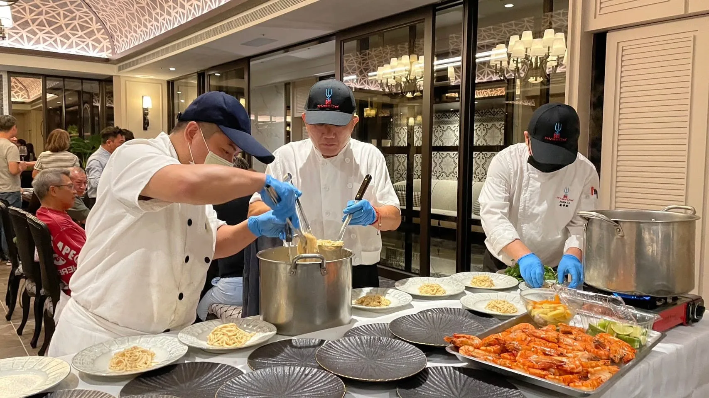

無菜單料理，不是「沒有菜單」，而是「由主廚決定當天要端出什麼」。這種形式把選擇權交給主廚，依當天食材狀態跟賓客組成，設計出一套完整的料理節奏。
無菜單料理的核心是信任——你把「今天吃什麼」交給主廚判斷，主廚會依食材當下最好的狀態，設計出前菜到主餐到甜點的完整節奏，而不是照著固定菜單機械式出餐。
喜歡驚喜、信任主廚專業判斷的客戶，通常最能享受無菜單料理的樂趣；如果對特定菜色有明確堅持，或飲食禁忌較多，我們會建議搭配半客製化菜單，兼顧彈性與安心感。
套餐制是固定菜色、固定順序，客人選好之後就不會改變；無菜單料理則保留彈性，主廚可能因為當天食材狀態，或現場賓客的反應，臨時調整下一道菜的呈現方式。這種「隨機應變」的空間，正是無菜單料理最迷人、也最考驗主廚功力的地方——每一場都是獨一無二的組合，不會被複製。
如果你對無菜單料理到底是什麼？還有其他疑問，歡迎直接聯繫舒苑團隊，會有專人依你的實際需求提供更詳細的說明與建議。
優點：主廚依當天最新鮮的食材決定菜色，風味與時令感最好；整份菜單由主廚統一設計，上菜節奏完整；賓客也能享受未知的驚喜。
限制：事前不一定知道確切菜色，口味差異大或禁忌較多的聚會，需要提前溝通；價格通常以人數計算，臨時調整的彈性比單點小。
三者都是「按順序上菜」，差別在於菜色由誰決定、是否事先公開：
| 形式 | 菜色由誰決定 | 是否事先公開 | 常見類型 |
|---|---|---|---|
| 無菜單料理（Tasting Menu） | 主廚 | 多半用餐時才知道，會依禁忌調整 | 西式、中式、創意料理 |
| Omakase（おまかせ） | 主廚（日文「交給您決定」） | 通常不公開 | 壽司、日本料理 |
| 一般套餐 | 餐廳預先設定 | 事先公開，可挑選 | 各式餐廳 |
1. 飲食禁忌與過敏：不吃的食材、宗教或素食需求，請在預約時說明，主廚才能在設計時避開。
2. 預算範圍：預算決定食材等級與道數，提早告知比臨時調整更順利。
3. 人數與場合：紀念日、商務接待與家族聚會的節奏與氛圍不同，菜單設計也會跟著調整。
4. 偏好與不想要的元素：例如特別愛吃海鮮、不喜歡太濃的醬汁，這些細節能讓整份菜單更貼近你。
套餐的菜色事先公開，無菜單料理則由主廚依當天食材決定，客人用餐時才知道內容；兩者通常都是循序上菜。
可以。過敏、不吃的食材與素食需求，建議在預約時說明，主廚會在設計菜單時避開。
適合紀念日、生日、商務宴請與想嘗試主廚創意的聚會；若賓客口味差異大或禁忌較多，可先與主廚確認方向。
提供活動日期、人數與場地，我們將提供最適合的私廚方案與報價建議。